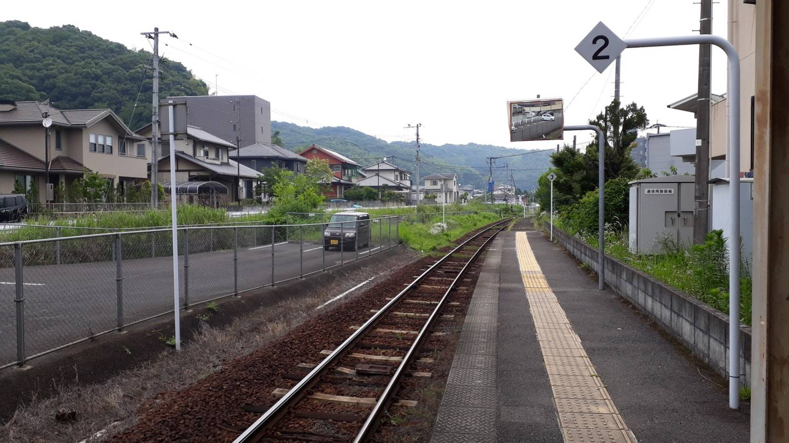
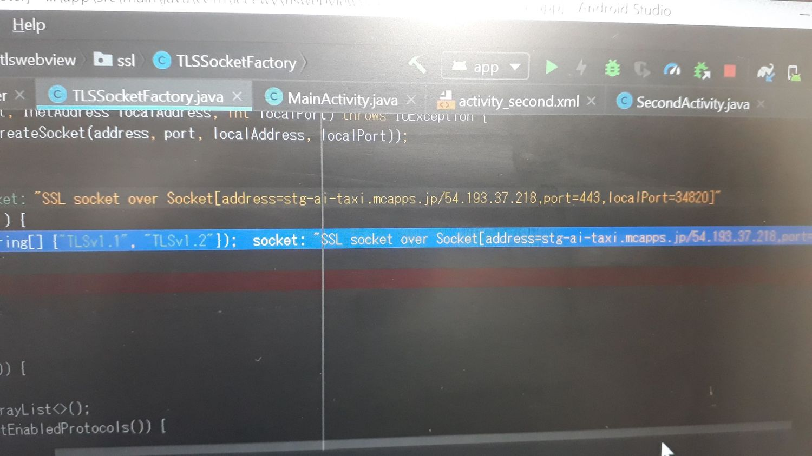
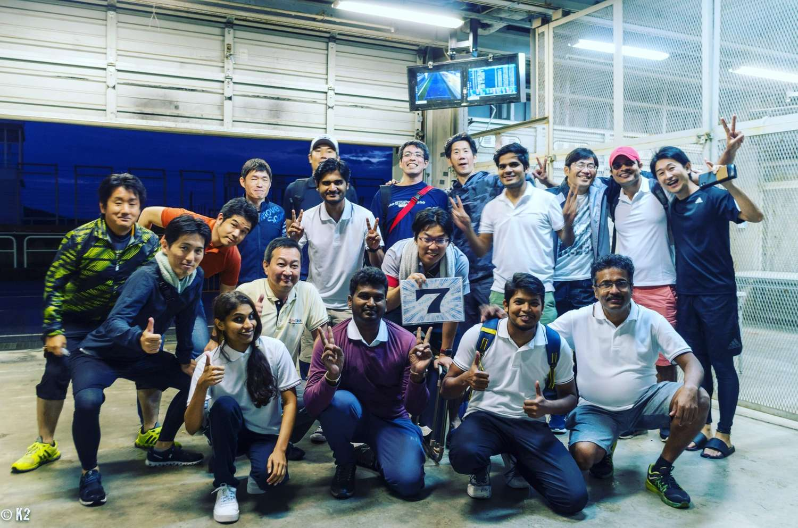
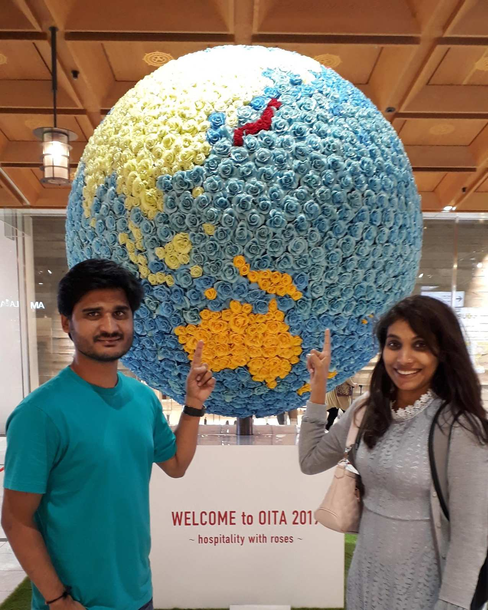
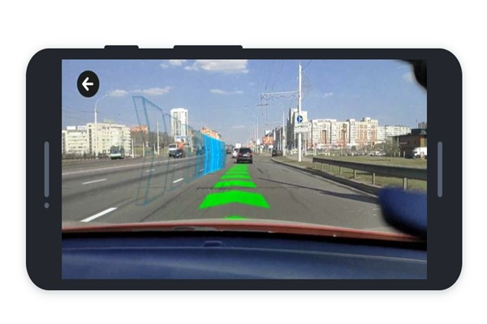
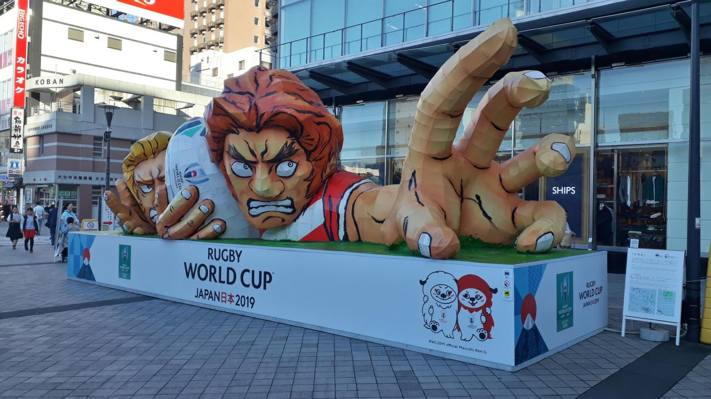
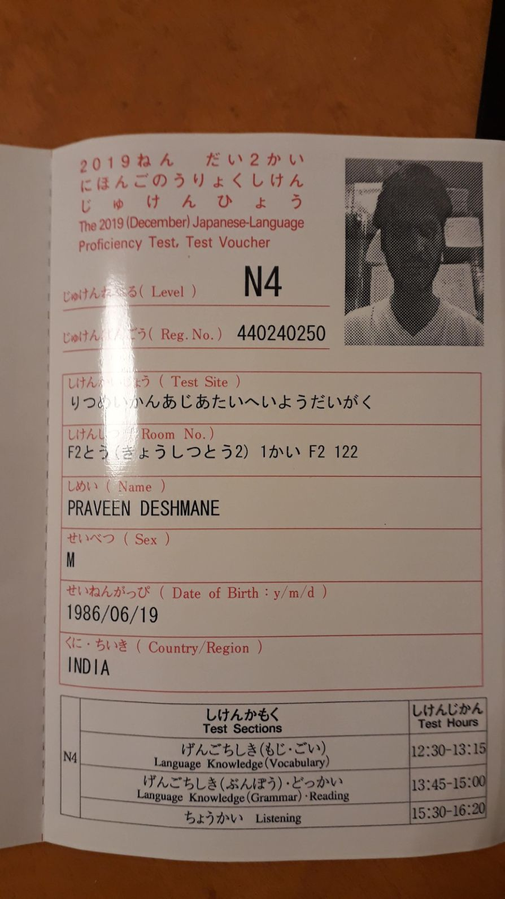
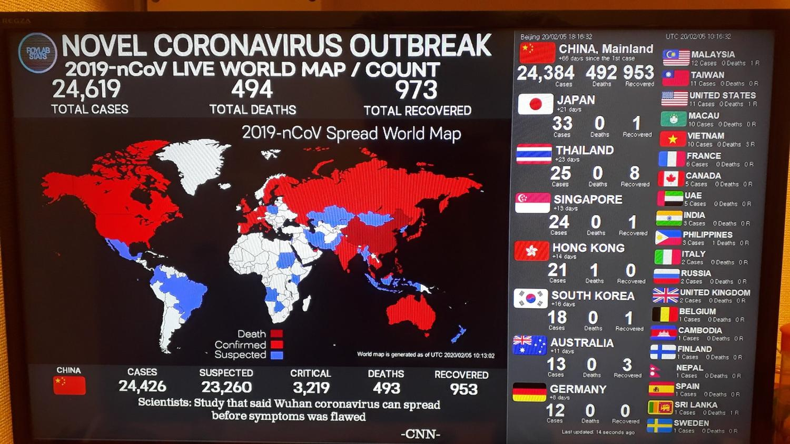

Year Two: Debugging Code and Decoding Kanji
After 2.5 months back in India, I found myself boarding a plane to Japan again. Round two! But this time, it wasn't just me—I had four brave colleagues joining me on this three-month adventure. You'd think by now I'd be a seasoned Japan expert, but trust me, Japan always finds a way to surprise you.
Success is not final, failure is not fatal: it is the courage to continue that counts.
Chapter 1: Back in Japan—But With Company
Returning to Japan felt like revisiting an old friend... who speaks a language you still barely understand. This time, with three colleagues by my side, I felt a little like a tour guide. They looked to me like I had the answers. I smiled, nodded, and hoped Google Maps wouldn't betray us. It was all good until we hit the local trains. My personal favorite? The commute from Kaku to Oita. It sounds straightforward, but throw in station announcements in rapid-fire Japanese and the occasional “Wait, did we miss our stop?” panic, and you've got yourself a real-life puzzle. At this point, I felt like I was decoding Japanese train routes just as much as I was trying to decode kanji.
Chapter 2: AI Taxi App—It's Alive!
Back at work, I was thrown into a new project: an AI-driven taxi app. Picture this: me, trying to teach an app how to think, while I'm still learning how to function in Japan. The irony wasn't lost on me. Every day felt like a debugging warzone—one minute, the code is smooth sailing, the next, everything's on fire (sometimes literally if you count the Hanabi fireworks, but more on that later). Between debugging AI algorithms and trying not to break the app, I occasionally wondered if the app was getting smarter than me. If one day you see AI taxis ruling the world, just know I tried to contain it.
Turns out, knowing how to ask for a beer in Japanese doesn't help much when you're trying to understand why the server's throwing 500 errors. I spent my days debugging code and my nights trying to decode kanji like it was some kind of ancient riddle. Spoiler alert: both were equally confusing.
- Kanji Overload: Discovered the joy of opening my first code review written entirely in kanji. My response? "Uh... is this the documentation, or a poem?"
- Lost in Translation: I accidentally told my boss I had "debugged my lunch" instead of my code during a team meeting. Spoiler: Nobody was impressed.
Chapter 3: Hanabi—Fireworks, but Extra
Speaking of fire… let’s talk Hanabi. I thought I’d seen all there was to see last year. Boy, was I wrong. Japanese fireworks make everything else look like a matchstick fizzle. There I was, sitting under a sky that looked like it was having the most beautiful, well-orchestrated meltdown. My colleagues were speechless. Or maybe they were still recovering from the train ride. Either way, we watched in awe, half-expecting the AI taxi app to start requesting fireworks displays in its downtime.
Chapter 4: The Great Cycle Race—Sweat, Sore Legs, and Spectacle
Just when I thought I’d experienced all the quirks Japan had to offer, I found myself smack dab in the middle of a cycle race. Now, I wasn’t racing—I was watching, because let’s be honest, the only race I’m winning is against a deadline. But watching these athletes pedal like their lives depended on it had me cheering louder than I thought possible. Maybe it was the adrenaline, or maybe it was my sheer excitement that none of my colleagues had accidentally entered the race (you can never be too sure with those guys).
Chapter 5: The Return—With More Stories Than Souvenirs
Three months flew by faster than a bullet train (or, in my case, a local train with occasional delays). Before I knew it, I was back on a plane to India, once again with more stories than souvenirs. I'd survived debugging AI, navigating train systems, and decoding even more kanji, all while pretending I knew what I was doing the entire time.
But now, as I sit back in India, I can't help but wonder… how long before Japan calls me back for round three? And more importantly, will I ever master the art of getting off at the right train station?
Stay tuned for the next chapter in my Japanese adventure. Hopefully, by then, I'll have fully debugged my life in sync with my code.

Chapter 6: Back to Oita—The Sequel
By now, Oita felt like a second home. I knew the train routes, the best ramen spots, and I could even bow in sync with the locals like I'd been doing it my whole life (that's the real skill, forget the JLPT). This time, though, I was armed with two fresh-faced colleagues who were about to get their first taste of Japanese life—and possibly more kanji confusion than they bargained for.
Chapter 7: AR Navigation App—Augmented Reality, Real Confusion
The new challenge at work? Building an AR navigation app. Yes, augmented reality. It sounds cool, right? It was… until you're knee-deep in code trying to get virtual arrows to line up with actual streets. There's nothing quite like the feeling of triumph when an AR arrow successfully points the way without sending users into a wall. But also, nothing quite like the existential crisis when it doesn't. Let's just say there were more than a few moments when I felt like I needed an AR app to navigate through my own life.
Chapter 8: Rugby Fever—Oita Style
Then came the Rugby World Cup. Oita was buzzing with excitement, and who was I to ignore the hype? The atmosphere was electric. Rugby fans flooded the city, turning it into one giant international party. My colleagues and I joined in, cheering for teams we barely knew, eating way too many street snacks, and pretending we understood the rules of rugby (we didn't, but who cares when you're having that much fun?). If you've never watched a rugby match in Japan, trust me, it's an experience. The crowd's energy is contagious—even if you're clueless about the game like I was.
Chapter 9: JLPT N4—Leveled Up
Amid the AR app madness and rugby fever, I somehow managed to clear JLPT N4. Yes, N4! I went from basic survival phrases to actually understanding a fair amount of what people were saying (unless they spoke at lightning speed, which they often did). This was the level-up moment I'd been waiting for. I mean, I could read signs, understand train announcements, and even make casual conversation without sweating profusely! Progress, my friends, real progress.
Chapter 10: December Magic—And My Love Story
December in Japan is something special—twinkling lights, crisp air, and festive decorations everywhere. But for me, this December was extra magical because it was when I fell more in love… with my girlfriend (now wife!). Between coding, rugby, and studying kanji, we found time to explore the city, laugh at my terrible pronunciation, and share some of the best meals I've ever had. It was the kind of love story that could melt even the coldest December night. And it did. Fast forward to today, and she's now my wife. (Pro tip: finding love in Japan is way easier than figuring out kanji. Just saying.)

Chapter 11: Illumination—And the COVID Curveball
As winter settled in, Japan's famous winter illumination festivals lit up the streets. We went to see the lights, and it felt like walking through a fairy tale. Little did we know that a different kind of darkness was on the horizon—COVID-19. The world was starting to change, and while we didn't know the full extent yet, the quiet streets and masked faces were a stark contrast to the festive glow of the lights. The pandemic hit, and suddenly, everything slowed down. It was a strange, surreal end to the year, but in some ways, it made those memories even more precious.
